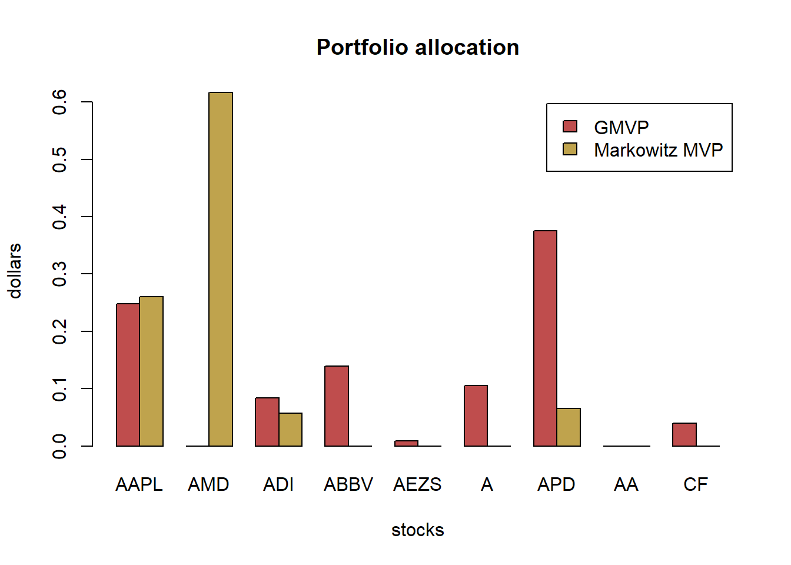

Chapter 6 Robust portfolio design
6.1 Motivation
A convex optimization problem is written as
\[\begin{array}{ll} \underset{\mathbf{x}}{\textsf{minimize}} & f_{0}\left(\mathbf{x}\right)\\ \textsf{subject to} & f_{i}\left(\mathbf{x}\right)\leq0\qquad i=1,\ldots,m\\ & \mathbf{h}\left(\mathbf{x}\right)=\mathbf{A}\mathbf{x}-\mathbf{b}=0 \end{array}\]
where \(f_{0},\,f_{1},\ldots,f_{m}\) are convex and equality constraints are affine.
Convex problems enjoy a rich theory (KKT conditions, zero duality gap, etc.) as well as a large number of efficient numerical algorithms guaranteed to deliver an optimal solution. However, the obtained optimal solution typically performs very poorly (or even useless!) in practice.
The question is whether a small error in the parameters is going to be detrimental or can be ignored. That depends on each particular type of problem.
To make explicit the fact that the functions depend on parameters \(\boldsymbol{\theta}\), we can write explicitly write \(f_{i}\left(\mathbf{x};\boldsymbol{\theta}\right)\) and \(h_{i}\left(\mathbf{x};\boldsymbol{\theta}\right)\). The naive approach is to pretend that \(\hat{\boldsymbol{\theta}}\) is close enough to \(\boldsymbol{\theta}\) and solve the approximated problem.
Markowitz’s portfolio suffers from:
it is highly sensitive to parameter estimation errors (i.e., to the covariance matrix Σ and especially to the mean vector μ): solution is robust optimization and improved parameter estimation,
variance is not a good measure of risk in practice since it penalizes both the unwanted high losses and the desired low losses: the solution is to use alternative measures for risk, e.g., VaR and CVaR,
it only considers the risk of the portfolio as a whole and ignores the risk diversification (i.e., concentrates risk too much in few assets, this was observed in the 2008 financial crisis): solution is the risk parity portfolio.
In this chapter, we focus on the first issue (parameter estimation errors). There are several ways to make the problem robust to parameters errors, mainly:
Stochastic robust optimization (involving expectations):
The problem with expectations is that only the average behavior is concerned and nothing is under control about the realizations worse than the average. For example, on average some constraint will be satisfied but it will be violated for many realizations
Worst-case robust optimization:
The problem with worst-case programming is that it is too conservative as one deals with the worst possible case.
Chance programming or chance robust optimization:
The naive constraint \(f(\mathbf{x};\hat{\boldsymbol{\theta}})\leq0\) is replaced with \(\mathsf{Pr}_{\boldsymbol{\theta}}\left[f(\mathbf{x};\boldsymbol{\theta})\leq0\right]\geq1-\epsilon=0.95\)Chance programming tries to find a compromise. In particular, it also models the estimation errors statistically but instead of focusing on the average it guarantees a performance for, say, 95% of the cases. Chance or probabilistic constraints are generally very hard to deal with and one typically has to resort to approximations.
_Data preparation__:
from = "2013-01-01"
to = "2018-12-31"
tickers <- c("AAPL", "AMD", "ADI", "ABBV", "AEZS", "A", "APD", "AA","CF")
prices <- get_data(tickers, from, to)
N <- ncol(prices)
T <- nrow(prices)
X <- diff(log(prices)) %>% na.omit()
mu <- colMeans(X)
Sigma <- cov(X)
plot(prices/rep(prices[1, ], each = nrow(prices)), col = rainbow10equal, legend.loc = "topleft",
main = "Normalized prices")
6.2 Sensitivity of different portfolio design
6.2.1 Global Maximum Return Portfolio
w_GMRP <- GMRP(mu)
w_all_GMRP <- cbind(w_GMRP)
barplot(t(w_all_GMRP), col = rainbow8equal[1], legend = colnames(w_all_GMRP), beside = TRUE,
main = "Global maximum return portfolio allocation", xlab = "stocks", ylab = "dollars") Let’s now introduce some estimation error in \(\boldsymbol{\mu}\) to see the effect:
Let’s now introduce some estimation error in \(\boldsymbol{\mu}\) to see the effect:
library(mvtnorm)
# generate a few noisy estimations of mu
for (i in 1:6) {
mu_noisy <- as.vector(rmvnorm(n = 1, mean = mu, sigma = (1/T)*Sigma))
w_GMRP_noisy <- GMRP(mu_noisy)
w_all_GMRP <- cbind(w_all_GMRP, w_GMRP_noisy)
}
# plot to compare the allocations
barplot(t(w_all_GMRP), col = rainbow8equal[1:7], legend = colnames(w_all_GMRP), beside = TRUE,
main = "Global maximum return portfolio allocation", xlab = "stocks", ylab = "dollars") We can see that the optimal allocation changes totally from realization to realization, which is highly undesirable (in fact, it is totally unacceptable).
6.2.2 Global Minimum Variance Portfolio
Let’s continue with the GMVP formulated as
\[\begin{array}{ll} \underset{\mathbf{w}}{\textsf{minimize}} & \mathbf{w}^T\mathbf{\Sigma}\mathbf{w}\\ {\textsf{subject to}} & \mathbf{1}^T\mathbf{w} = 1\\ & \mathbf{w}\ge\mathbf{0} \end{array}\]
w_GMVP <- GMVP(Sigma, long_only = TRUE)
w_all_GMVP <- cbind(w_GMVP)
# plot allocation
barplot(t(w_all_GMVP), col = rainbow8equal[1], legend = colnames(w_all_GMVP), beside = TRUE,
main = "Global minimum variance portfolio allocation", xlab = "stocks", ylab = "dollars")
The GMVP is totally different from the maximum return portfolio. It’s quite the opposite: the budget is allocated to most of the stocks to diversity the risk.
Let’s now introduce some estimation error in \(\boldsymbol{\Sigma}\) to see the effect:
library(PerformanceAnalytics)
set.seed(357)
N <- ncol(X)
for (i in 1:6) {
X_noisy <- rmvnorm(n = T, mean = rep(0, N), sigma = Sigma)
Sigma_noisy <- cov(X_noisy)
w_GMVP_noisy <- GMVP(Sigma_noisy, long_only = TRUE)
w_all_GMVP <- cbind(w_all_GMVP, w_GMVP_noisy)
}
# plot to compare the allocations
chart.StackedBar(t(w_all_GMVP), main = "GMVP allocation", ylab = "w", space = 0, border = NA) We can see that the optimal allocation still changes from realization to realization, although in this case is not that extreme.
We can see that the optimal allocation still changes from realization to realization, although in this case is not that extreme.
6.2.3 Markowitz’s mean-variance portfolio
w_Markowitz <- MVP(mu, Sigma, long_only = TRUE)
w_all_Markowitz <- cbind(w_Markowitz)
# plot allocation
barplot(t(w_all_Markowitz), col = rainbow8equal[1], legend = colnames(w_all_Markowitz), beside = TRUE, main = "Markowitz portfolio allocation", xlab = "stocks", ylab = "dollars")
for (i in 1:6) {
X_noisy <- rmvnorm(n = T, mean = mu, sigma = Sigma)
mu_noisy <- colMeans(X_noisy)
Sigma_noisy <- cov(X_noisy)
w_Markowitz_noisy <- MVP(mu_noisy, Sigma_noisy, long_only = TRUE)
w_all_Markowitz <- cbind(w_all_Markowitz, w_Markowitz_noisy)
}
# plot to compare the allocations
chart.StackedBar(t(w_all_Markowitz), main = "Markowitz portfolio allocation", ylab = "w", space = 0, border = NA) Again, the allocations are totally different from realization to realization. Totally unacceptable. Who is going to trust these allocations to invest their money?
Again, the allocations are totally different from realization to realization. Totally unacceptable. Who is going to trust these allocations to invest their money?
6.3 Robust portfolio optimization
6.3.1 Worst-case robust GMRP
\[\begin{array}{ll} \underset{\mathbf{w}}{\textsf{maximize}} & \underset{\boldsymbol{\mu}\in\mathcal{U}_{\boldsymbol{\mu}}}{\min}\mathbf{w}^{T}\boldsymbol{\mu}\\ \textsf{subject to} & \mathbf{1}^{T}\mathbf{w}=1. \end{array}\]
For an elliptical uncertainty set \[\mathcal{U}_{\boldsymbol{\mu}} = \left\{\boldsymbol{\mu}=\hat{\boldsymbol{\mu}}+\kappa\mathbf{S}^{1/2}\mathbf{u}\mid\left\Vert \mathbf{u}\right\Vert _{2}\leq1\right\}\]
For a box uncertainty set \[\mathcal{U}_\boldsymbol{\mu}^b = \{\boldsymbol{\mu}\ | -\boldsymbol{\delta}\leq\boldsymbol{\mu}-\hat{\boldsymbol{\mu}}\leq\boldsymbol{\delta}\}\] where typically \(\delta_i = \kappa\hat{\sigma}_i\), the the robust formulation becomes \[\begin{array}{ll} \underset{\mathbf{w}}{\textsf{maximize}} & \mathbf{w}^T\hat{\boldsymbol{\mu}} - |\mathbf{w}|^T\boldsymbol{\delta}\\ {\textsf{subject to}} & \mathbf{1}^T\mathbf{w} = 1\\ & \mathbf{w}\ge\mathbf{0}. \end{array}\] We have gone from an LP to an SOCP.
portfolioMaxReturnRobustBox <- function(mu_hat, delta) {
w <- Variable(length(mu_hat))
prob <- Problem(Maximize( t(w) %*% mu_hat - t(abs(w)) %*% delta ),
constraints = list(w >= 0, sum(w) == 1))
result <- solve(prob)
w <- as.vector(result$getValue(w))
names(w) <- names(mu_hat)
return(w)
}
# clairvoyant solution
w_GMRP <- GMRP(mu)
names(w_GMRP) <- colnames(X)
w_all_GMRP_robust_box <- cbind(w_GMRP)
# multiple robust solutions
kappa <- 0.1
delta <- kappa*sqrt(diag(Sigma_noisy))
set.seed(357)
for (i in 1:6) {
X_noisy <- rmvnorm(n = T, mean = mu, sigma = Sigma)
mu_noisy <- colMeans(X_noisy)
Sigma_noisy <- cov(X_noisy)
w_GMRP_robust_box_noisy <- portfolioMaxReturnRobustBox(mu_noisy, delta)
w_all_GMRP_robust_box <- cbind(w_all_GMRP_robust_box, w_GMRP_robust_box_noisy)
}
# plot to compare the allocations
barplot(t(w_all_GMRP_robust_box), col = rainbow8equal[1:7], legend = colnames(w_all_GMRP_robust_box),
beside = TRUE, args.legend = list(bg = "white"),
main = "Robust (box) global maximum return portfolio allocation", xlab = "stocks", ylab = "dollars")
portfolioMaxReturnRobustEllipsoid <- function(mu_hat, S, kappa = 0.1) {
S12 <- chol(S) # t(S12) %*% S12 = Sigma
w <- Variable(length(mu_hat))
prob <- Problem(Maximize( t(w) %*% mu_hat - kappa*norm2(S12 %*% w) ),
constraints = list(w >= 0, sum(w) == 1))
result <- solve(prob)
return(as.vector(result$getValue(w)))
}
# clairvoyant solution
w_GMRP <- GMRP(mu)
w_all_GMRP_robust_ellipsoid <- cbind(w_GMRP)
# multiple robust solutions
kappa <- 0.2
set.seed(357)
for (i in 1:6) {
X_noisy <- rmvnorm(n = T, mean = mu, sigma = Sigma)
mu_noisy <- colMeans(X_noisy)
Sigma_noisy <- cov(X_noisy)
w_GMRP_robust_ellipsoid_noisy <- portfolioMaxReturnRobustEllipsoid(mu_noisy, Sigma_noisy, kappa)
w_all_GMRP_robust_ellipsoid <- cbind(w_all_GMRP_robust_ellipsoid, w_GMRP_robust_ellipsoid_noisy)
}
# plot to compare the allocations
chart.StackedBar(t(w_all_GMRP_robust_ellipsoid),
main = "Robust (ellipsoid) global maximum return portfolio allocation",
ylab = "w", space = 0, border = NA)
6.3.2 Worst-case robust GMVP
\[\begin{array}{ll} \underset{\mathbf{w}}{\textsf{minimize}} & \underset{\boldsymbol{\Sigma}\in\mathcal{U}_{\boldsymbol{\Sigma}}}{\max}\mathbf{w}^{T}\boldsymbol{\Sigma}\mathbf{w}\\ \textsf{subject to} & \mathbf{1}^{T}\mathbf{w}=1. \end{array}\]
we will then model the data matrix as
\[\mathcal{U}_{\mathbf{X}} =\left\{\mathbf{X}\mid\left\Vert\mathbf{X}-\hat{\mathbf{X}}\right\Vert_{F}\leq\delta_{\mathbf{X}}\right\}\]
The robust problem formulation finally becomes:
\[\begin{array}{ll} \underset{\mathbf{w},\mathbf{X},\mathbf{Z}}{\textsf{minimize}} & \textsf{Tr}\left(\hat{\boldsymbol{\Sigma}}\left(\mathbf{X}+\mathbf{Z}\right)\right) + \delta\left\Vert \mathbf{S}_{\boldsymbol{\Sigma}}^{1/2}\left(\textsf{vec}(\mathbf{X})+\textsf{vec}(\mathbf{Z})\right)\right\Vert _{2}\\ \textsf{subject to} & \mathbf{w}^{T}\mathbf{1}=1,\quad \mathbf{w}\ge\mathbf{0}\\ & \left[\begin{array}{cc}\mathbf{X} & \mathbf{w}\\ \mathbf{w}^{T} & 1\end{array} \right]\succeq\mathbf{0}\\ & \mathbf{Z}\succeq\mathbf{0}. \end{array}\]
# define function (check: https://cvxr.rbind.io/post/cvxr_functions/)
portfolioGMVPRobustBox <- function(Sigma_lb, Sigma_ub) {
N <- nrow(Sigma_lb)
w <- Variable(N)
Lambda_ub <- Variable(N, N)
Lambda_lb <- Variable(N, N)
prob <-
Problem(
Minimize(
matrix_trace(Lambda_ub %*% Sigma_ub) - matrix_trace(Lambda_lb %*% Sigma_lb)
),
constraints = list(
w >= 0,
sum(w) == 1,
Lambda_ub >= 0,
Lambda_lb >= 0,
bmat(list(list(
Lambda_ub - Lambda_lb, w
),
list(t(
w
), 1))) == Variable(c(N + 1, N + 1), PSD=TRUE)
)
)
result <- solve(prob)
return(as.vector(result$getValue(w)))
}
# clairvoyant solution
w_GMVP <- GMVP(Sigma, long_only = TRUE)
names(w_GMVP) <- colnames(X)
w_all_GMVP_robust_box <- cbind(w_GMVP)
# multiple robust solutions
delta <- 3
set.seed(357)
for (i in 1:6) {
X_noisy <- rmvnorm(n = T, mean = mu, sigma = Sigma)
mu_noisy <- colMeans(X_noisy)
Sigma_noisy <- cov(X_noisy)
Sigma_lb <- (1/delta)*Sigma_noisy
#diag(Sigma_lb) <- diag(Sigma_noisy)
Sigma_ub <- (1/delta)*Sigma_noisy
diag(Sigma_ub) <- diag(Sigma_noisy)
w_GMVP_robust_box_noisy <- portfolioGMVPRobustBox(Sigma_lb, Sigma_ub)
w_all_GMVP_robust_box <- cbind(w_all_GMVP_robust_box, w_GMVP_robust_box_noisy)
}
# plot to compare the allocations
barplot(t(w_all_GMVP_robust_box), col = rainbow8equal[1:7], legend = colnames(w_all_GMVP_robust_box),
beside = TRUE, args.legend = list(bg = "white", x = "topleft"),
main = "Robust (box) GMVP allocation", xlab = "stocks", ylab = "dollars")
chart.StackedBar(t(w_all_GMVP_robust_box),
main = "Robust (box) GMVP allocation", ylab = "w", space = 0, border = NA)The naive GMVP was already kind of stable. Nevertheless, the robust GMVP becomes even more stable (less sensitive to the estimation errors).
portfolioGMVPRobustSphereX <- function(X_hat, delta) {
N <- ncol(X_hat)
w <- Variable(N)
X_ <- scale(X_hat, center = TRUE, scale = FALSE) # demean
prob <- Problem(Minimize(norm2(X_ %*% w) + delta*norm2(w)),
constraints = list(w >= 0, sum(w) == 1))
result <- solve(prob)
return(as.vector(result$getValue(w)))
}
# clairvoyant solution
w_GMVP <- GMVP(Sigma, long_only = TRUE)
names(w_GMVP) <- colnames(X)
w_all_GMVP_robust_sphereX <- cbind(w_GMVP)
# multiple robust solutions
delta <- 0.1
set.seed(357)
for (i in 1:6) {
X_noisy <- rmvnorm(n = T, mean = mu, sigma = Sigma)
w_GMVP_robust_sphereX_noisy <- portfolioGMVPRobustSphereX(X_noisy, delta)
w_all_GMVP_robust_sphereX <- cbind(w_all_GMVP_robust_sphereX, w_GMVP_robust_sphereX_noisy)
}
# plot to compare the allocations
chart.StackedBar(t(w_all_GMVP), main = "Naive GMVP allocation", ylab = "w", space = 0, border = NA)
chart.StackedBar(t(w_all_GMVP_robust_sphereX), main = "Robust (sphere in X) GMVP allocation", ylab = "w", space = 0, border = NA)Finally, let’s consider the robust formulation for the elliptical uncertainty region on the covariance matrix
portfolioGMVPRobustEllipsoid <- function(Sigma_hat, S, delta) {
N <- ncol(Sigma_hat)
S12 <- chol(S) # t(S12) %*% S12 = Sigma
w <- Variable(N)
X <- Variable(N, N)
Z <- Variable(N, N)
prob <-
Problem(
Minimize(matrix_trace(Sigma_hat %*% (X + Z)) + delta * norm2(S12 %*% (vec(X) + vec(Z)))),
constraints = list(
w >= 0,
sum(w) == 1,
bmat(list(list(X, w),
list(t(w), 1))) == Variable(c(N + 1, N + 1), PSD = TRUE),
Z == Variable(c(N, N), PSD = TRUE)
)
)
result <- solve(prob)
return(as.vector(result$getValue(w)))
}
# clairvoyant solution
w_GMVP <-GMVP(Sigma, long_only = TRUE)
names(w_GMVP) <- colnames(X)
w_all_GMVP_robust_ellipsoid <- cbind(w_GMVP)
# multiple robust solutions
delta <- 0.0005
set.seed(357)
for (i in 1:6) {
X_noisy <- rmvnorm(n = T, mean = mu, sigma = Sigma)
Sigma_noisy <- cov(X_noisy)
w_GMVP_robust_ellipsoid_noisy <- portfolioGMVPRobustEllipsoid(Sigma_noisy, diag(N^2), delta)
w_all_GMVP_robust_ellipsoid <- cbind(w_all_GMVP_robust_ellipsoid, w_GMVP_robust_ellipsoid_noisy)
}
# plot to compare the allocations
chart.StackedBar(t(w_all_GMVP), main = "Naive GMVP allocation", ylab = "w", space = 0, border = NA)6.3.3 Worst-case Markowitz’s portfolio
\[\begin{array}{ll} \underset{\mathbf{w},\mathbf{X},\mathbf{Z}}{\textsf{maximize}} & \begin{array}{r} \underset{\boldsymbol{\mu}\in\mathcal{U}_{\boldsymbol{\mu}}}{\min}\mathbf{w}^{T}\boldsymbol{\mu}-\lambda\left(\mathsf{Tr}\left(\hat{\boldsymbol{\Sigma}}\left(\mathbf{X}+\mathbf{Z}\right)\right)\right.\hspace{2cm}\\ \left.+\delta_{\boldsymbol{\Sigma}}\left\Vert \mathbf{S}_{\boldsymbol{\Sigma}}^{1/2}\left(\mathsf{vec}(\mathbf{X})+\mathsf{vec}(\mathbf{Z})\right)\right\Vert _{2}\right) \end{array}\\ \textsf{subject to} & \mathbf{w}^{T}\mathbf{1}=1,\quad\mathbf{w}\in\mathcal{W}\\ &\left[\begin{array}{cc} \mathbf{X} & \mathbf{w}\\ \mathbf{w}^{T} & 1 \end{array}\right]\succeq\mathbf{0}\\ & \mathbf{Z}\succeq\mathbf{0}. \end{array}\]
Consider the two uncertainty sets: \[\begin{aligned} \mathcal{U}_{\boldsymbol{\mu}}^{b} &= \left\{\boldsymbol{\mu}\mid-\boldsymbol{\delta}\leq\boldsymbol{\mu}-\hat{\boldsymbol{\mu}}\leq\boldsymbol{\delta}\right\},\\ \mathcal{U}_{\boldsymbol{\Sigma}}^{b} &= \left\{\boldsymbol{\Sigma}\mid\underline{\boldsymbol{\Sigma}}\leq\boldsymbol{\Sigma}\leq\overline{\boldsymbol{\Sigma}},\boldsymbol{\Sigma}\succeq\mathbf{0}\right\} \end{aligned}\]
\[\begin{array}{ll} \underset{\mathbf{w},\overline{\boldsymbol{\Lambda}},\underline{\boldsymbol{\Lambda}}}{\textsf{maximize}} & \mathbf{w}^{T}\hat{\boldsymbol{\mu}}-|\mathbf{w}|^{T}\boldsymbol{\delta}-\lambda\left(\textsf{Tr}(\overline{\boldsymbol{\Lambda}}\,\overline{\boldsymbol{\Sigma}})-\textsf{Tr}(\underline{\boldsymbol{\Lambda}}\,\underline{\boldsymbol{\Sigma}})\right)\\ \textsf{subject to} & \mathbf{w}^{T}\mathbf{1}=1,\quad\mathbf{w}\in\mathcal{W},\\ & \begin{bmatrix}\overline{\boldsymbol{\Lambda}}-\underline{\boldsymbol{\Lambda}} & \mathbf{w}\\ \mathbf{w}^{T} & 1 \end{bmatrix}\succeq\mathbf{0},\\ & \overline{\boldsymbol{\Lambda}}\geq\mathbf{0},\quad\underline{\boldsymbol{\Lambda}}\geq\mathbf{0}. \end{array}\]
\[\begin{array}{ll} \underset{\mathbf{w}}{\textsf{maximize}} & \mathbf{w}^T\hat{\boldsymbol{\mu}} - \kappa\|\hat{\mathbf{\Sigma}}^{1/2}\mathbf{w}\|_{2} - \lambda\left(\|\hat{\mathbf{\Sigma}}^{1/2}\mathbf{w}\|_2 + \frac{\delta}{\sqrt(T-1)} \|\mathbf{w}\|_2\right)^2\\ {\textsf{subject to}} & \mathbf{1}^T\mathbf{w} = 1\\ & \mathbf{w}\ge\mathbf{0}. \end{array}\]
portfolioMarkowitzRobust <- function(mu_hat, Sigma_hat, kappa, delta_, lmd = 0.5) {
N <- length(mu_hat)
S12 <- chol(Sigma_hat) # t(S12) %*% S12 = Sigma
w <- Variable(N)
prob <- Problem(Maximize(t(w) %*% mu_hat - kappa*norm2(S12 %*% w)
- lmd*(norm2(S12 %*% w) + delta_*norm2(w))^2),
constraints = list(w >= 0, sum(w) == 1))
result <- solve(prob)
return(as.vector(result$getValue(w)))
}
# clairvoyant solution
w_Markowitz <- MVP(mu, Sigma, long_only = TRUE)
names(w_Markowitz) <- colnames(X)
w_all_Markowitz_robust <- cbind(w_Markowitz)
# multiple robust solutions
kappa <- 1.0
delta <- 0.1*sqrt(T)
set.seed(357)
for (i in 1:6) {
X_noisy <- rmvnorm(n = T, mean = mu, sigma = Sigma)
mu_noisy <- colMeans(X_noisy)
Sigma_noisy <- cov(X_noisy)
w_Markowitz_robust_noisy <- portfolioMarkowitzRobust(mu_noisy, Sigma_noisy, kappa, delta/sqrt(T-1))
w_all_Markowitz_robust <- cbind(w_all_Markowitz_robust, w_Markowitz_robust_noisy)
}
# plot to compare the allocations
barplot(t(w_all_Markowitz_robust), col = rainbow8equal[1:7], legend = colnames(w_all_Markowitz_robust),
beside = TRUE, args.legend = list(bg = "white", x = "topleft"),
main = "Robust Markowitz portfolio allocation", xlab = "stocks", ylab = "dollars")chart.StackedBar(t(w_all_Markowitz),
main = "Naive Markowitz allocation", ylab = "w", space = 0, border = NA)chart.StackedBar(t(w_all_Markowitz_robust),
main = "Robust Markowitz portfolio allocation", ylab = "w", space = 0, border = NA)# clairvoyant solutions
w_Markowitz <- MVP(mu, Sigma, long_only = TRUE)
names(w_Markowitz) <- colnames(X)
portfolioMaxSharpeRatio <- function(mu, Sigma) {
w_ <- Variable(nrow(Sigma))
prob <- Problem(Minimize(quad_form(w_, Sigma)),
constraints = list(w_ >= 0, t(mu) %*% w_ == 1))
result <- solve(prob)
w <- as.vector(result$getValue(w_)/sum(result$getValue(w_)))
names(w) <- colnames(Sigma)
return(w)
}
w_MaxSR <- portfolioMaxSharpeRatio(mu, Sigma)
names(w_MaxSR) <- colnames(X)
# multiple naive and robust solutions
kappa <- 0.25 # smaller gives some bad outliers
delta <- 0.01*sqrt(T) #larger gives a much more stable performance
w_all_Markowitz_naive <- NULL
w_all_Markowitz_robust <- NULL
set.seed(357)
for (i in 1:10) {
X_noisy <- rmvnorm(n = T, mean = mu, sigma = Sigma)
mu_noisy <- colMeans(X_noisy)
Sigma_noisy <- cov(X_noisy)
w_Markowitz_noisy <- MVP(mu_noisy, Sigma_noisy, long_only = TRUE)
w_Markowitz_robust_noisy <- portfolioMarkowitzRobust(mu_noisy, Sigma_noisy, kappa, delta/sqrt(T-1))
w_all_Markowitz_naive <- cbind(w_all_Markowitz_naive, w_Markowitz_noisy)
w_all_Markowitz_robust <- cbind(w_all_Markowitz_robust, w_Markowitz_robust_noisy)
}
# performance
mean_variance <- function(w, mu, Sigma)
return(t(w) %*% mu - 0.5 * t(w) %*% Sigma %*% w)
Sharpe_ratio <- function(w, mu, Sigma)
return(t(w) %*% mu / sqrt(t(w) %*% Sigma %*% w))
mean_variance_clairvoyant <- mean_variance(w_Markowitz, mu, Sigma)
mean_variance_naive <- apply(w_all_Markowitz_naive, MARGIN = 2, FUN = mean_variance, mu, Sigma)
mean_variance_robust <- apply(w_all_Markowitz_robust, MARGIN = 2, FUN = mean_variance, mu, Sigma)
SR_clairvoyant <- Sharpe_ratio(w_MaxSR, mu, Sigma)
SR_naive <- apply(w_all_Markowitz_naive, MARGIN = 2, FUN = Sharpe_ratio, mu, Sigma)
SR_robust <- apply(w_all_Markowitz_robust, MARGIN = 2, FUN = Sharpe_ratio, mu, Sigma)library(rbokeh)
figure(width = 800, title = "Performance Markowitz",
xlab = "realization", ylab = "mean-variance", legend_location = "bottom_right") %>%
ly_points(mean_variance_naive, color = "blue", legend = "naive") %>%
ly_points(mean_variance_robust, color = "red", legend = "robust") %>%
ly_abline(h = mean_variance_clairvoyant, legend = "clairvoyant")figure(width = 800, title = "Performance Markowitz",
xlab = "realization", ylab = "Sharpe-ratio", legend_location = "bottom_right") %>%
ly_points(SR_naive, color = "blue", legend = "naive") %>%
ly_points(SR_robust, color = "red", legend = "robust") %>%
ly_abline(h = SR_clairvoyant, legend = "clairvoyant")6.3.4 Variance uncertainty based on factor model
\[\begin{array}{ll} \underset{\mathbf{w}}{\textsf{minimize}} & \left(\left\Vert \mathbf{V}_{0}\mathbf{w}\right\Vert +\rho\left\Vert \mathbf{w}\right\Vert \right)^{2}+\mathbf{w}^{T}\overline{\mathbf{D}}\mathbf{w}\\ \textsf{subject to} & \boldsymbol{\mu}_{0}^{T}\mathbf{w}-\boldsymbol{\gamma}^{T}\left|\mathbf{w}\right|\geq\beta\\ & \mathbf{1}^{T}\mathbf{w}=1. \end{array}\]